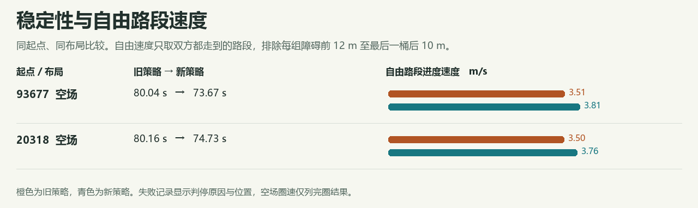

<!doctype html><html lang="zh-CN"><meta charset="utf-8"><link rel="icon" href="data:,"><meta name="viewport" content="width=device-width,initial-scale=1"><title>A4 驾驶考核 · 路障与自由速度</title><style>
*{box-sizing:border-box}body{background:#f6f7f0;color:#22312d;font:16px/1.65 "Segoe UI","Microsoft YaHei",sans-serif;max-width:1180px;padding:20px 24px;margin:auto}h1{font-size:clamp(26px,4vw,42px);margin:14px 0}h2{border-top:1px solid #c6d3c6;padding-top:20px;margin-top:26px}h3{margin-bottom:6px}p{margin:5px 0 14px}img,svg{max-width:100%;height:auto}svg{width:100%;max-height:280px;background:#fff;border-radius:8px}svg text{fill:#4e635a;font:12px sans-serif}.scroll{overflow-x:auto}table{border-collapse:collapse;width:100%;text-align:left;white-space:nowrap}th,td{padding:7px 9px;border-bottom:1px solid #d2ded5}td{font-variant-numeric:tabular-nums}select,input{font:inherit;max-width:100%}.legend{display:flex;flex-wrap:wrap;gap:18px}.legend span{color:#a2421d}.legend b{color:#14656e}.muted,small{color:#50675b}summary{cursor:pointer}input[type=range]{width:55%;vertical-align:middle}#command{margin:10px 0;padding:12px 15px;border-left:3px solid #187781;background:#eef2e9}#command p:last-child{margin:0}@media(max-width:600px){body{padding:12px}.legend{gap:5px;font-size:14px}}
</style><main><h1>A4 驾驶考核</h1><p>空场配对 2 组，分别完圈 2 和 2 次。</p><div class="scroll"><table><thead><tr><th>起点</th><th>旧策略</th><th>新策略</th><th>共同自由距离 m</th><th>速度差 m/s</th><th>分区用时 s（旧 → 新）</th></tr></thead><tbody><tr><td>93677</td><td>80.04 s</td><td>73.67 s</td><td>280.9</td><td>0.30</td><td>空场</td></tr><tr><td>20318</td><td>80.16 s</td><td>74.73 s</td><td>280.9</td><td>0.25</td><td>空场</td></tr></tbody></table></div><small>分区秒数用于描述驾驶动作。遇到横移桶的让行耗时不进入速度评分。部分路线的共同区间速度不能替代完圈成绩。</small></main><script type="application/json" id="actions">[]</script><script>
const by=id=>document.getElementById(id),zone=by('zone');
if(zone){
  const frames=JSON.parse(by('actions').textContent),step=by('step');
  const number=(n,k=2)=>n==null?'—':Number(n).toFixed(k);
  function draw(){
    const d=frames[Number(zone.value)][Number(step.value)],box=by('command');
    box.replaceChildren();by('stepLabel').hidden=!d;
    if(!d){box.textContent='该路段无可用的逐次决策日志。';return}
    const guides=(d.observed||[]).map(x=>number(x)).join(' / ');
    const reason=({yield:'路障让行',recover:'避让后恢复',road:'正常行驶',insufficient_lane:'车道观测不足',start:'起步'})[d.reason]||d.reason||'未记录';
    const nearest=(d.tracks||[]).filter(o=>o[0]>0).sort((a,b)=>a[0]-b[0])[0];
    const lines=[
      '仿真 '+number(d.t)+' s · '+reason+'。前方 2 / 3.5 / 5.5 / 8 m 车道横向观测为 '+guides+' m · 局部路障轨迹 '+(d.tracks||[]).length+' 条。',
      nearest?'最近前方目标：纵向 '+number(nearest[0])+' m，横向 '+number(nearest[1])+' m，估计横向速度 '+number(nearest[2])+' m/s。':'当前这一帧没有前方目标轨迹。',
      '预瞄 '+number(d.look)+' m，目标横移 '+number(d.offset)+' m，预瞄目标横坐标 '+number(d.target)+' m。曲率 '+number(d.curvature,3)+' /m。',
      '巡航目标 '+number(d.cruise)+' m/s，候选速度比例 '+number(d.ratio)+'，风险限速 '+(Number(d.guardCap)>20?'未限制':number(d.guardCap)+' m/s')+'；下发 '+number(d.speedCmd)+' m/s，实测 '+number(d.speed)+' m/s。',
      '目标偏航 '+number(d.yawCmd)+' rad/s，实测 '+number(d.yaw)+' rad/s；左轮指令 '+number(d.leftCan,0)+' RPM，右轮指令 '+number(d.rightCan,0)+' RPM。'
    ];
    for(const msg of lines){let p=document.createElement('p');p.textContent=msg;box.append(p)}
  }
  function change(){document.querySelectorAll('.encounter').forEach(el=>el.hidden=el.dataset.key!==zone.value);const actions=frames[Number(zone.value)];step.max=Math.max(0,actions.length-1);const lowest=actions.reduce((best,d,i)=>d.reason==='yield'&&(best<0||d.speedCmd<actions[best].speedCmd)?i:best,-1);step.value=Math.max(0,lowest);draw()}
  const moving=[...zone.options].find(o=>o.textContent.includes('横移')&&frames[Number(o.value)].some(d=>d.reason==='yield'));if(moving)zone.value=moving.value;
  step.oninput=draw;zone.onchange=change;change();
}
</script></html>